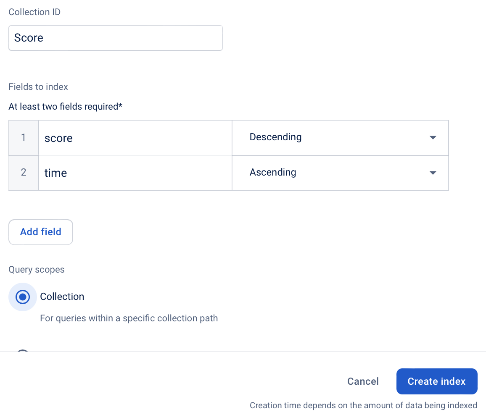

Lorsqu'on a beaucoup de données à gérer, il est souvent préférable de les stocker en externe. Firebase nous permettra de stocker et d'accéder à nos données facilement.
Commencer !Lorsqu'on a beaucoup de données à gérer, il est souvent préférable de les stocker en externe. Firebase nous permettra de stocker et d'accéder à nos données facilement.
Commencer !Aujourd'hui on va explorer le monde des bases de données. Une base de données est, comme le nom d'indique, un lieu centralisé pour garder toutes les données importantes de notre site. De cette manière, pas toutes les informations sont stockées sur le site lui même, permettant d'interagir avec d'autres individuels. Nous allons travailler sur un exemple de jeu de Quizz.
Nous allons utiliser un système qui s'appelle Firebase. Firebase est un système qui propose une grande multitude de services pour des applications web. Un des services est Firestore, un service de base de données.
Pour correctement entamer cette fiche, assure-toi que tu as:
Ensuite, assure-toi de te munir d'une grande motivation et soif d'apprendre!
Avant d'ajouter Firebase à notre application, nous devons avoir une application de base. L'application d'aujourd'hui sera un jeu de quizz. Il sera structuré selon la structure suivante:
Le but de ce cours n'est pas de développer un jeu front-end. Le code de base est entièrement listé ci-dessous. Assure-toi de le parcourir en entier et de répondre correctement aux questions en fin d'étape.
Voici le code index.html:
<!DOCTYPE html>
<html>
<head>
<title>Quizz</title>
<script src="questions.js"></script>
</head>
<body>
<!-- Div pour formulaire pour demander le nom et commencer le quizz -->
<div id="div_nom">
<form id="form_nom">
<label for="nom">Nom:</label>
<input type="text" name="nom" id="nom">
<button type="submit">Commencer</button>
</form>
</div>
<!-- Div pour formulaire pour répondre à une question -->
<div id="div_question" style="display: none">
<p id="question_text">Question</p>
<form id="form_question">
<label for="reponse">Réponse:</label>
<select name="reponse" id="reponse">
<option value="a" id="question_resA">XXX</option>
<option value="b" id="question_resB">XXX</option>
<option value="c" id="question_resC">XXX</option>
<option value="d" id="question_resD">XXX</option>
</select>
<button type="submit">Suivant</button>
</form>
</div>
<!-- Div pour resultats -->
<div id="div_results" style="display: none">
<p id="p_results">XXX</p>
</div>
<script src="script.js"></script>
</body>
</html>
Voici le code questions.js (tu peux bien entendu modifier les questions!):
let questions = [
{
"question": "Q1",
"answers": {
"a": "A1",
"b": "A2",
"c": "A3",
"d": "A4"
},
"correct": "a"
},
{
"question": "Q2",
"answers": {
"a": "A1",
"b": "A2",
"c": "A3",
"d": "A4"
},
"correct": "a"
},
{
"question": "Q3",
"answers": {
"a": "A1",
"b": "A2",
"c": "A3",
"d": "A4"
},
"correct": "a"
}
]
Et finalement, le code script.js, qui contient la logique du site:
// Variables globales
let nom = "";
let question_id = -1;
let question_total = 3;
let question_answer;
let score = 0;
let start, time;
// Elements de question et de réponses
const div_nom = document.getElementById("div_nom");
const form_nom = document.getElementById("form_nom");
const div_question = document.getElementById("div_question");
const form_question = document.getElementById("form_question");
const question_text = document.getElementById("question_text");
const question_resA = document.getElementById("question_resA");
const question_resB = document.getElementById("question_resB");
const question_resC = document.getElementById("question_resC");
const question_resD = document.getElementById("question_resD");
const div_results = document.getElementById("div_results");
const p_results = document.getElementById("p_results");
// Function pour collecter nom et passer aux questions
function montrerQuestions(event) {
event.preventDefault();
start = Date.now();
// Collecter réponse du formulaire
const data = Object.fromEntries(new FormData(event.target));
nom = data["nom"];
// Cacher div pour le nom, et montrer div pour les questions
div_nom.style.display = "none";
div_question.style.display = "block";
// Mettre à jour la question
questionSuivante();
}
// Function pour corriger question et changer de question
function montrerQuestionSuivante(event) {
event.preventDefault();
// Collecter réponse du joueur
const data = Object.fromEntries(new FormData(event.target));
let res = data["reponse"];
// Ajouter un point si la réponse est correcte
if (res == question_answer) {
score += 1;
}
// Mettre à jour la question
questionSuivante();
}
// Function pour passer à la question suivante
function questionSuivante() {
// Mettre à jour le numéro de la question
question_id += 1;
// Si à la fin des questions, passer aux résultats
if (question_id == question_total) {
montrerResultats();
} else {
// Mettre à jour la question et les réponses possibles
question_text.textContent = questions[question_id].question;
question_resA.textContent = questions[question_id].answers["a"];
question_resB.textContent = questions[question_id].answers["b"];
question_resC.textContent = questions[question_id].answers["c"];
question_resD.textContent = questions[question_id].answers["d"];
// Sauvegarder index de la réponse correcte
question_answer = questions[question_id].correct;
}
}
function montrerResultats() {
// Calculer temps
end = Date.now();
let time = end - start;
// Afficher nombre de points
p_results.textContent = `Félicitations ${nom}, tu as obtenu ${score} points en ${time}ms!`;
// Cacher les questions et montrer résultats
div_question.style.display = "none";
div_results.style.display = "block";
}
// Attacher des fonctions lorsque les formulaires sont soumis
form_nom.addEventListener("submit", montrerQuestions);
form_question.addEventListener("submit", montrerQuestionSuivante);
Une fois que tu as le code prêt de ton côté, assure-toi qu'il fonctionne correctement. Ensuite, répond aux questions suivantes;
addEventListener? Et quelle est l'importance du paramètre "submit"?<script src="script.js"></script> se trouve à la fin du body dans index.html? Pourquoi il n'est pas dans le head, ou en début de body? Essaie de le bouger pour voir ce qu'il se passe. Le jeu fonctionne encore?style="display: none" dans les div avec identifiants div_question et div_results? Quel code JavaScript effectue un résultat similar? Et comment peut-on annuler cet effet, à nouveau grâce à une commande JavaScript?event.preventDefault();? Que se passe-t-il si on l'enlève?question_id commence-t-elle à -1 et non à 0? Que se passe-t-il si on la mets à 0 initialement?questions.js, mais il faut aussi apporter un changement dans script.js. C'est une seule ligne à changer ;-)questions.js. Les "clés" sont les mots comment "question", "answers", "a", "b", "c", "d" et "correct". Que se passe-t-il si un de ces mots est mal écrit?Date.now()?On va maintenant configurer Firebase afin de pouvoir ajouter la base de données à notre application. En un premier lieu, va sur la console Firebase, et connecte-toi avec ton compte Google. Tu devrais arriver sur la page suivante. Sélectionne "Create Project".
Indique un nom pour le projet, accepte les conditions, et sélectionne "Continue". Ensuite, sélectionne à nouveau "Continue". Finalement, choisis un emplacement local (Belgique), accepte les conditions et clique sur "Create project". Ton projet sera dès lors créé, ceci peut prendre quelques minutes.
Pour commencer à utiliser Firebase, on doit y ajouter une application. Dans le centre de l'écran, sélectionne l'icône central de web.
Ici, donne un nom pour ton site, et choisis "Register app" (sans choisir "Also set up Firebase Hosting for this app."). Une fois que l'application enregistrée, copies la variable firebaseConfig (entière, environ 9 lignes), et colles la variable entière au début de ton code script.js. Tu peux ignorer le restant du code donné par Firebase. Attention! Le code ci-dessous est pour illustrer quoi copier, mais ton code sera différent!
Maintenant que l'application existe, on doit l'ajouter à notre code. La variable firebaseConfig que tu as copié constitue les codes d'accès à ton application, mais on doit ajouter l'interface pour s'y connecter. Tout d'abord, il nous faut installer Firebase dans notre application. Afin de ce faire, ajoute la ligne suivante dans le head.
<script src="https://www.gstatic.com/firebasejs/10.8.0/firebase-app-compat.js"></script>
Grâce à cette ligne, on a toutes les fonctions de Firebase disponible dans notre code. Et comme notre script.js vient après (en fin de body), on peut les utiliser dans script.js. Utilisons donc la variable que nous avions copié-collé plus tôt, en ajoutant la ligne suivante en dessus de la variable.
// Initialiser Firebase
firebase.initializeApp(firebaseConfig);
Ensuite, on va activer la base de données Firestore. Appuies sur "Cloud Firestore", et "Create database".
Choisis une location locale (eur3 par exemple), et ensuite "Create". Avant d'intégere la base de données, on va désactiver la protection de la base de données, afin qu'on puisse jouer avec. Navigues sur "Rules", et changes le false sur la ligne 6 par un true, afin que le code lise
rules_version = '2';
service cloud.firestore {
match /databases/{database}/documents {
match /{document=**} {
allow read, write: if true;
}
}
}
Lorsque le code est modifié, appuies sur "Publish". Le changement effectué permet à tout le monde de lire et d'écrire dans la base de données. On pourra ajouter un niveau de sécurité plus tard, pour l'instant ceci suffira.
Nous devons également importer la base de données dans notre code. Dans le index.html, ajoutes la ligne suivante dans le head, après la ligne d'importation de Firebase:
<script src="https://www.gstatic.com/firebasejs/10.8.0/firebase-firestore-compat.js"></script>
Dans le script.js, en dessus de l'initialisation de firebase, tu peux ajouter la ligne suivante, qui actives firestore:
// Initialiser Firestore
const firestore = firebase.firestore();
Firebase est maintenant configuré et prêt à être utilisé!
On peut maintenant commencer à changer notre code afin qu'il s'adapte avec notre base de données. La chose importante à changer en un premier lieu est comme on genére la variable questions. Dans notre première version du code, cette variable était importée d'un fichier JavaScript externe. On va maintenant faire en sorte que cette variable soit téléchargée directement de notre base de données Firebase.
Premièrement, retourne sur Firebase. Si tu as quitté la page, tu peux la retrouver ici. Choisis ton projet, et dans la barre de navigation à gauche choisis "Firestore Database".
La base de données fonctionne avec des "Collections" et des "Documents". Une collection represente des tirroirs, dans laquelle on peut mettre plusieurs boîtes, qu'on appelle des documents. Une boîte (document) peut contenir à peu près ce que l'on souhaite. Crée un document qui s'appelle "Questions" en appuyant sur "Start collection", en tapant le nom de la collection et en appuyant sur "Next". Ensuite on va créer notre premier document, qui va representer la première question. Appuie sur "Auto-ID" afin de générer un identifiant pour la question, ou donnes un ID unique à ta question toi-même. On va suivre le même format que plus tôt pour les questions. Copie la structure dans l'image qui suit, en adaptant ta question et tes réponses. N'oublie pas que les "clés" (les mots "questions", "answers", "a", "b", "c", "d" et "correct" sont importants!). Une fois que la première question est bien écrite, tu peux appuyer sur "Save".
Si tu as fait une erreur, ou que tu souhaites changer ta question plus tard, pas de soucis! En effet, tu peux directement changer les informations à partir de l'écran sur lequel tu te situes. Essaie d'adapter une des réponses. Tu peux également facilement ajouter d'autres questions, grâce au bouton "Add document". Ajoutes-en quelques unes (au total minimum 3).
On doit alors adapter notre code afin d'importer les questions de la base de données et non du fichier local questions.js. Tu peux effacer la ligne qui importe le document questions.js, comme nous n'en avons plus besoin. Si tu veux, tu peux aussi effacer le document questions.js, mais comme il n'est pas importé cela ne changera pas grand chose.
Afin de tester si tout a été bien fait pour le moment, on va lire les questions dans la base de données et les écrire dans la console. Ceci peut être fait grâce au code suivant:
// Tester Firestore
firestore.collection("Questions").get().then(function (collection) {
collection.forEach(function (doc) {
console.log(doc.data());
});
});
Voici quelques explications par rapport au petit code:
firestore.collection("Questions").get() va récuperer la collection qui s'appelle "Questions" (créée plus tôt) de la base de données..then() est une méthode qui signifie que lorsque l'événement a été réalisé, la prochain événement peut commencer. Ceci arrive souvent en travaillant avec des APIs externes (tel firestore), parce que la connection n'est pas instantanée, et il faut attendre que Firestore ait renvoyé la collection avant de pouvoir travailler dessus. Le paramètre de la méthode .then() est une fonction qui prend la collection en input et fait quelque chose avec.collection.forEach() est une boucle sophisitiquée, où l'on boucle sur les éléments de collection (à savoir les documents). doc.data() récupere toutes les données du document en question.Si tout fonctionne correctement, en lançant ton code, tu devrais voir tes questions apparaître dans la console. Notes que l'ordre des questions n'est pas nécessairement le même que l'ordre dans lequel tu les as écrites.
On y est presque! On arrive à écrire les questions dans la console, il suffit maintenant de les stocker dans une variable. Afin de ce faire, suis les étapes suivantes:
questions. Note que ce nom était également l'ancien nom de variable pour les questions, donc on n'aura pas à changer le restant du code. Cette variable doit être définie avec la partie qu'on utilisait pour tester Firestore. Comme on va changer cette liste par la suite, tu peux définir cette variable avec let, plutôt que const. Quelle est la différence entre ces deux mots?questions.push(XXX), où le "XXX" est à remplacer par les données de chaque question.Pour éviter des erreurs imprévues, il vaut mieux adapter la variable question_total également. Après qu'on ait écrites toutes les questions (après le collection.forEach()), tu peux mettre à jour la variable question_total afin de matcher le nombre exact de questions. Tu peux obtenir ce nombre grâce à la commande questions.length().
Si tout se passe bien, tu as maintenant un code qui fonctionne exactement comme avant, mais où les questions sont stockées dans la base de données. Cela veut dire que si tu veux changer des questions, il suffit d'aller changer les questions dans la base de données, et il n'y a pas besoin de changer le code du site. Tu peux maintenant effacer le fichier questions.js pour de bon, comme on n'en aura plus besoin. Assure-toi bien que ton code fonctionne avant de passer à l'étape suivante.
À la fin de notre quizz, le site affiche combien de points le joueur a obtenu. Mais s'il ne peut pas comparer avec d'autres c'est pas super intéressant. On va donc changer cela! Il y a deux étapes à faire afin d'arriver à cela:
Pour la première étape, localises dans ton code la ligne où tu affiches le score du joueur. Elle ressemble à la suivante:
p_results.textContent = `Félicitations ${nom}, tu as obtenu ${score} points!`;
Le format à suivre pour ajouter un document dans une collection est le suivant:
firestore.collection("cities").add({
name: "Tokyo",
country: "Japan"
})
.then(function () {
console.log("Document ajouté avec succès!");
})
.catch(function (error) {
console.error("Erreur: ", error);
});
Quelques notes:
firestore.collection("NOM DE COLLECTION")..add(XXX), où "XXX" est un dictionnaire avec les valeurs à écrire..then() et .catch()) sont simplement pour avec logs dans la console, mais ne sont pas importants pour la logique du code. Ils sont importants pour trouver des erreurs.Ajoute un code similaire à celui de ci-haut, en adaptant la collection pour être "Score", en adaptant les valeurs du dictionnaire. Le dictionnaire doit contenir deux entrées, notamment name: XXX et score: XXX.
Joue à ton Quizz une fois et vérifies dans Firebase que la collection "Score" s'est bien créé, et que ton score a bien été ajouté.
Super! On peut alors passer à la seconde étape, notamment afficher tous les scores en fin de partie. Pour ce faire, on va ajouter une liste dans notre document index.html, dans la div pour les résultats, qu'on va remplir en fin de partie. En un premier temps, adapte ton index.html comme suit:
<!-- Div pour resultats -->
<div id="div_results" style="display: none">
<p id="p_results">XXX</p>
<ol id="ol_results"></ol>
</div>
On doit créer une variable dans script.js afin de pouvoir modifier cette liste grâce à du JavaScript. Cela ressemble au suivant:
const ol_results = document.getElementById("ol_results");
Après avoir écrit notre score dans la base de données, dans le .then() qui suit le firestore.collection("Score").add(XXX), on va lire tous les scores et populer cette liste. On suivra donc le format suivant:
firestore.collection("Score").add({
name: nom,
score: score
})
.then(function(docRef) {
console.log("Document ajouté avec succès!");
// (1) Lire tous les scores
// (2) Créer un élément <li> par score lu
// (3) Afficher chaque élélemt <li> dans ol_results
})
.catch(function(error) {
console.error("Erreur: ", error);
});
questions. Ici on va simplement pas ajouter les données du document dans une variable, mais on va créer un élément <li> et l'ajouter au code html.<li> par score, on peut utiliser la commande JavaScript createElement. Ainsi, le code suivant va créer un élément <li> et le stocker dans une variable li.
const li = document.createElement("li");
li.innerHTML = "XXX";. Tu peux changer le "XXX" par un texte qui contient le nom du joueur ainsi que son score, par exemple `${doc.data().name} (${doc.data().score})`
li créé à l'élément ol_results, on peut utiliser le code JavaScript ol_results.appendChild(li);.Tout ensemble, cela devrait ressembler au code suivant:
firestore.collection("Score").add({
name: nom,
score: score
})
.then(function(docRef) {
console.log("Document ajouté avec succès!");
// Lire tous les scores
firestore.collection("Score").get().then(function(collection) {
collection.forEach(function(doc) {
// Créer un élément <li> par score lu
const li = document.createElement("li");
// Afficher chaque élélemt <li> dans ol_results
li.innerHTML = `${doc.data().name} (${doc.data().score})`;
ol_results.appendChild(li);
})
})
})
.catch(function(error) {
console.error("Erreur: ", error);
});
Tu devrais maintenant voir un classement lorsque tu finis le quizz!
On a pourtant un petit problème. Les scores ne sont pas dans l'ordre... On peut facilement résoudre cela! Après le firestore.collection("XXX"), mais avant le .get(), ajoute la méthode .orderBy("XXX", "desc"). Remplace le "XXX" par le champ selon lequel tu veux trier (ici "score"). Le "desc" indique qu'on veut trier de manière décroissante (du plus grand score au plus petit score).
On pourrait aussi ajouter la fonctionalité suivante: Le nom du joueur est en gras. Cela permet de facilement distinguer où il en est sur le classement. Note qu'on a la variable docRef, qui correspond au document qu'on vient d'ajouter (donc celui qui correspond au joueur), et la variable doc pour chaque document dans "Score". On va donc simplement comparer les deux variables (leurs identifiants), et lorsqu'ils sont égaux, mettre le texte en gras.
if (doc.id === docRef.id) {
li.style.fontWeight = "bold";
}
Le joueur peut maintenant facilement s'identifier parmi tous les autres joueurs.
Si trop de joueur jouent au quizz, le classement sera beaucoup trop long et n'apportera pas beaucoup d'informations. Il vaut peut être mieux uniquement indiquer les 10 meilleurs dans ce cas. Pour ce faire, après le orderBy(...), mais avant le .get(), tu peux ajouter un .limit(10), qui indique qu'on ne récupere uniquement les 10 meilleurs scores.
Comme notre quizz n'a pas énormement de questions, il est facile d'arriver ex-aequo avec d'autres joueurs. Dans ce cas, on voudrait toujours pouvoir demarquer les joueurs les uns des autres. Pour ce faire, on va utiliser le temps que le joueur met à finir le quizz, et démarquer les égalités sur base du temps.
On va ajouter la variable time au document qu'on ajoute à la collection "Score". Ceci se fait dans le dictionnaire dans le .set(XXX).
Avant de relancer le quizz, va sur Firebase, s ton projet, et va sur "Firestore Database" dans la barre à gauche. Met ta souris sur la collection "Score", et tu verras trois petits points apparaître. Appuies dessus, sélectionne "Delete collection", et confirme en tapant "Score" dans la case texte. Ceci va effacer la collection et ainsi remettre à zéro le classement. Si tu lances le quizz maintenant, tu devrais voir les scores se remettre dans la collection "Score", avec une entrée time également maintenant.
Dans le contenu de l'élément li, défini par li.innerHTML, tu peux ajouter le temps également.
Dernière chose à faire; On doit s'assurer que les ex-aequo sont démarqués par le temps. Afin de ce faire, on peut trier après la variable time, après qu'on ait déjà trié par la variable score. En effet, on veut toujours qu'on score élévé avec un temps énorme soit plus haut dans le classement qu'un score faible avec un temps rapide. Ainsi, entre le .orderBy("score", "desc") et le .limit(10), ajoute .orderBy("time"). Ici, on ne précise pas "desc", comme on veut les petits temps d'abord, et on a pas besoin de préciser que ce soit dans un ordre croissant comme c'est l'ordre par défaut.
Attention! Ceci va générer un message d'erreur dans la console, et les scores ne s'afficheront pas. En effet, comme on utilise deux indicateurs d'ordre pour la collection (orderBy("score", "desc") et orderBy("time")), on doit d'abord autoriser cette combinaison.
Pour autoriser la combinaison, on doit créer quelque chose qui s'appelle un "Index" dans Firebase. Va sur Firebase, sélectionne ton projet, et va sur "Firestore Database" dans la barre à gauche. En haut de l'écran tu verras un onglet "Indexes". Clique dessus et choisi "Create index". Indique le nom de la collection pour laquelle tu veux créer un index (ici "Score"), et ensuite rempli les cases avec "score" en choissant "Descending", et "time" en choissant "Ascending". Sous "Query scopes" sélectionne "Collection", et ensuite sélectionne "Create index".
Tu verras alors ton index sur l'écran. Tout à droite il y a une colonne "Status". Au début, le statut sera "Building" (en construction). Il faudra attendre que ce statut change à "Enabled" avant de procéder. Cela peut prendre quelques minutes.
Retourne sur ton quizz et relance-le. L'erreur devrait avoir disparue, et tu devrais pouvoir trier les joueurs par temps sans problèmes.
Ceci était une fiche un peu plus avancée que d'habitude. Voici un petit résumé de tout ce qui a été couvert:
head du document index.html:
<script src="https://www.gstatic.com/firebasejs/10.8.0/firebase-app-compat.js"></script>
<script src="https://www.gstatic.com/firebasejs/10.8.0/firebase-firestore-compat.js"></script>
script.js, on doit ajouter le code suivant, qui initialise Firebase et se connecte à la base de données Firestore:
// Configuration Firebase
const firebaseConfig = {XXX};
// Initialiser Firebase
firebase.initializeApp(firebaseConfig);
// Initialiser Firestore
const firestore = firebase.firestore();
firestore.collection("NOM DE COLLECTION").get().then(function (collection) {
collection.forEach((doc) => {
console.log(doc.data())
});
});
firestore.collection("NOM DE COLLECTION").add({
name: nom,
...
}).then(function(docRef) {
console.log("Document ajouté avec succès!");
}).catch(function(error) {
console.error("Erreur: ", error);
});
.orderBy(). Par exemple, si on veut trier les documents par la variable time, on ferait
firestore.collection("NOM DE COLLECTION").orderBy("time").get().then(function (collection) {
// ...
});
.orderBy("time", "desc"). On peut trier sur plusieurs clés, mais on doit alors créer un Index.
.limit(10) avant le .get(). Par exemple:
firestore.collection("NOM DE COLLECTION").limit(10).get().then(function (collection) {
// ...
});